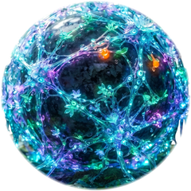

Подход — «типографика как инженерия»: буква как деталь с допуском, посадка знака к ядру по оптической оси, регистр как конструктивный выбор. По трендам 2026 (LogoLounge) выигрывают интегрированные литеры, морф-марки и linework, а не «шрифт + свечение»; моно-акценты дают технику без клише Orbitron. Каждый стенд: ядро 44 px + знак крупно. Анимации — деликатные, ≤7 s.
Точка отсчёта: Orbitron 800, бегущий градиент 100° (7 s) + свечение (4.5 s). Сравниваем все варианты с ним: широконосый геометрический капс-шрифт, «геймерское» клише, градиент тянет на себя весь контраст.

eVo текущий видШрифт с фасками 45° (Chakra Petch — «инженерные» скосы граней), вертикальный градиент мята→циан вместо радужного свечения; над знаком — выносная размерная линия с рисками и допуском: буква, у которой указан калибр.
Литералы построены штрихами, не шрифтом: единая монолиния 4 px, радиус 15, круглые «пины»; по V бежит циановый импульс, вершина V — янтарная точка пайки. Нижний регистр — самый дружелюбный знак стенда.
Капс с инженерным воздухом (шаг 0.34em, Oxanium — гранёный HUD) — по исследованиям капс читается как +52% «компетентности»; под знаком двоичная подпись байтов e/V/o: знак, который можно проверить до бита.
Тренд «морф-марк» 2026: V — разъём между ядром и надписью: e и o — тонкая фиолетовая обводка, V — заливка градиентом, а от ядра к V ведёт дорожка платы с виа-точками. Надпись перестаёт быть наклейкой — она подключена.
HUD-скобки (угловые риски с мягким дыханием) вокруг «evO», янтарный статус-огонёк и моно-подпись: знак ведёт себя как живой элемент интерфейса — «цель захвачена, синхронизация с ядром идёт».